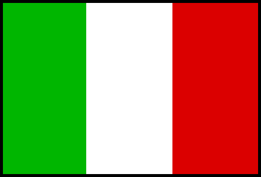

Mario del Grande e Remo Camerini
|
||
|
|
Traduci |
|
| The Hystory for Hut Mario del Grande e Remo Camerini |
||
 The mountain hut is named after two mountain climbers: Mario Del Grande, who died on Rasica Peak in 1936, and Remo Camerini, who died on the southern side of Mount Grigna in 1926. The hut was built in 1937 by a group of friends. They later donated it to the I.A.C. Milan Section. The hut could not be used for a long time because of vandalism and weather damage.
The mountain hut is named after two mountain climbers: Mario Del Grande, who died on Rasica Peak in 1936, and Remo Camerini, who died on the southern side of Mount Grigna in 1926. The hut was built in 1937 by a group of friends. They later donated it to the I.A.C. Milan Section. The hut could not be used for a long time because of vandalism and weather damage. In 2001 the I.A.C. Milan section handed the property over to the Sovico section. Thanks to the initiatives and the passion of its members , the hut was completely restored.
In 2001 the I.A.C. Milan section handed the property over to the Sovico section. Thanks to the initiatives and the passion of its members , the hut was completely restored. From 2004 to 2005 , the Sovico section expanded the hut and built a bathroom, a kitchen, a cellar and a small room for its staff. Extension works strictly followed the Sovico guidelines, in order to keep it as close as possible to its original appearance without increasing the number of beds available.
From 2004 to 2005 , the Sovico section expanded the hut and built a bathroom, a kitchen, a cellar and a small room for its staff. Extension works strictly followed the Sovico guidelines, in order to keep it as close as possible to its original appearance without increasing the number of beds available. Although three times bigger, the hut remains a small and spartan accomodation, respecting the mountain environment and offering breathtaking views over the Disgrazia glacier and the Vazzeda Peak.
Although three times bigger, the hut remains a small and spartan accomodation, respecting the mountain environment and offering breathtaking views over the Disgrazia glacier and the Vazzeda Peak.
|